ISOM 230 — Spring 2026 — SAP BW/4HANA
I built the data infrastructure
that turns raw sales data
into business decisions.
From ingesting 171,000+ raw transaction records across two countries to modeling a fully structured enterprise data warehouse, building interactive dashboards, and running predictive forecasting models — this project covers the complete BI lifecycle. Not just technically, but with a clear understanding of why each decision matters to the business.
SAP BW/4HANA 2.0
Eclipse Modeling Tools
ETL Pipeline Design
Data Warehouse Architecture
OLAP Modeling
SAP Fiori
SAP Lumira Designer
SAP Predictive Analytics
Business impact at a glance
171k+
Sales transactions loaded across Germany and US markets
8/8
Benchmarks completed across the full BI lifecycle
$953M+
In cost of goods data queryable for analytics and forecasting
How the pipeline was built
E — Extract
Pulled raw data from source systems
Designed DataSources for Germany and US CSV files, each with different locale formats — decimal separators, date conventions, and currency fields handled precisely.
T — Transform
Turned data into structured information
Applied field mapping, calculated Net Sales via formula rules, performed master data lookups for Sales Organization, and enforced constant language keys.
L — Load
Delivered data into the warehouse
Executed Data Transfer Processes (DTPs) to load both master data (29 materials) and transactional data (171k records) into an advanced DataStore Object.
Project benchmarks
8 of 8 benchmarks complete — full BI lifecycle delivered
Benchmark 2Complete
Data acquisition
171,012 raw records successfully extracted
Designed two DataSources to handle locale-specific formatting differences between Germany (comma decimals, EUR) and the US (period decimals, USD). Configured field types, conversion routines, and validated data previews before proceeding.
DataSource configurationETL extract layerData type mappingFormat handling
Proof of work
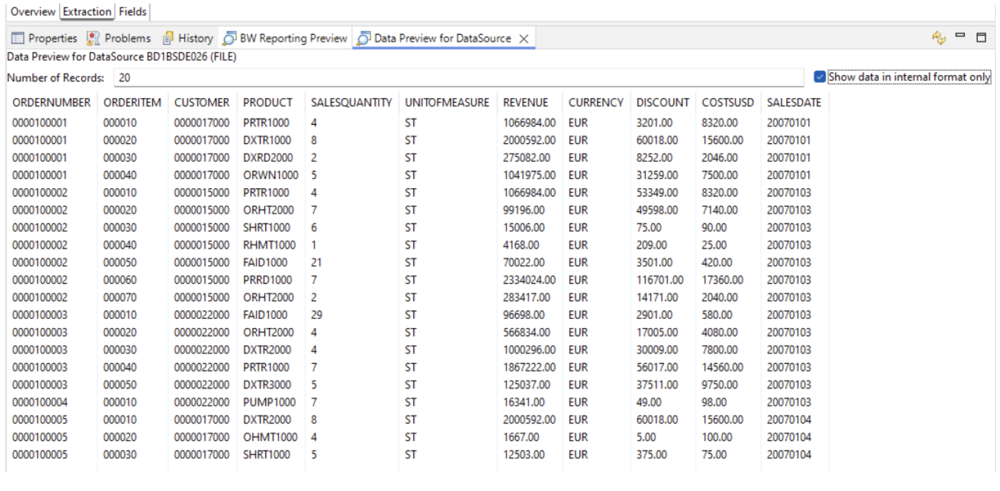
DE DataSource preview
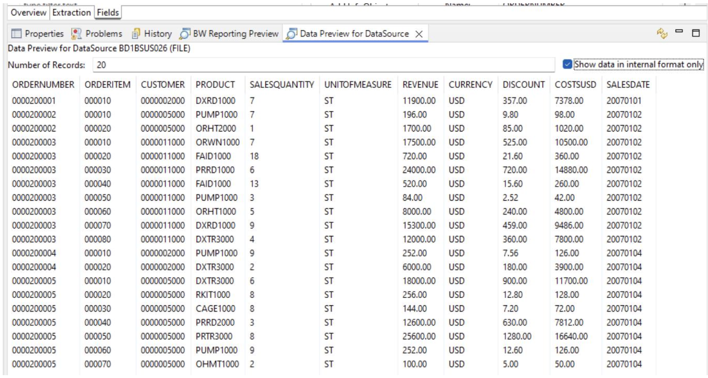
US DataSource preview
Benchmark 3Complete
InfoObject modeling
Core data model defined with business-aligned objects
Modeled key figures (Revenue, Sales Quantity) and characteristics (Product Category, Material) as reusable, company-wide InfoObjects. Configured master data tables, language-dependent text descriptions, and navigational attributes for OLAP drill-down.
Dimensional modelingMaster data designInfoObject architectureOLAP
Proof of work
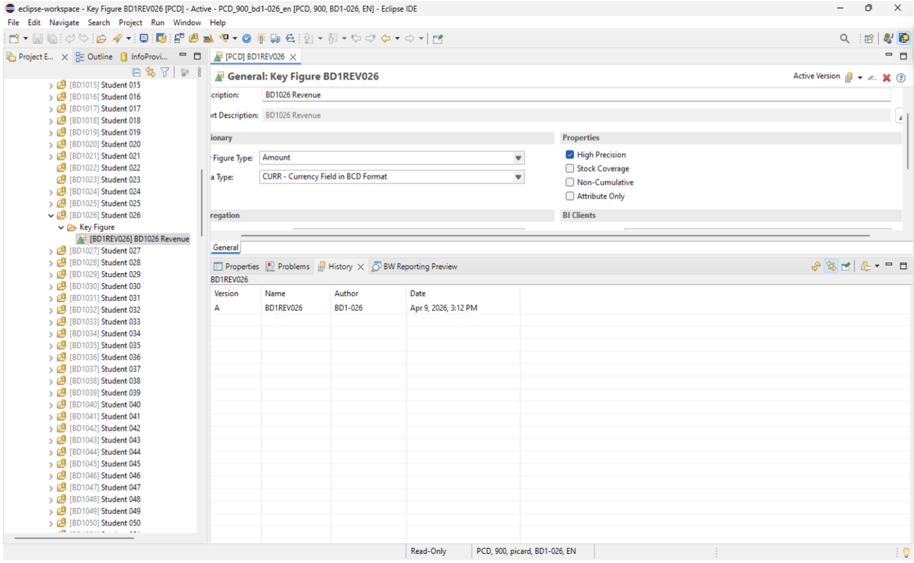
Revenue InfoObject in Eclipse
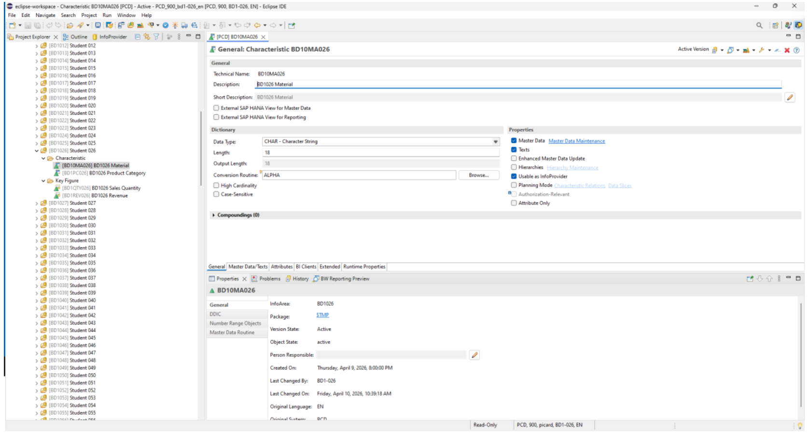
Material InfoObject in Eclipse
Benchmark 4Complete
Master data load
29 materials loaded with full attributes and descriptions
Built a complete data flow to load material attributes and text descriptions separately — a deliberate two-step process reflecting how master data is structured internally. Set a constant language key (EN) and verified both loads in SAP Fiori.
Data flow designTransformation rulesDTP executionFiori verification
Proof of work
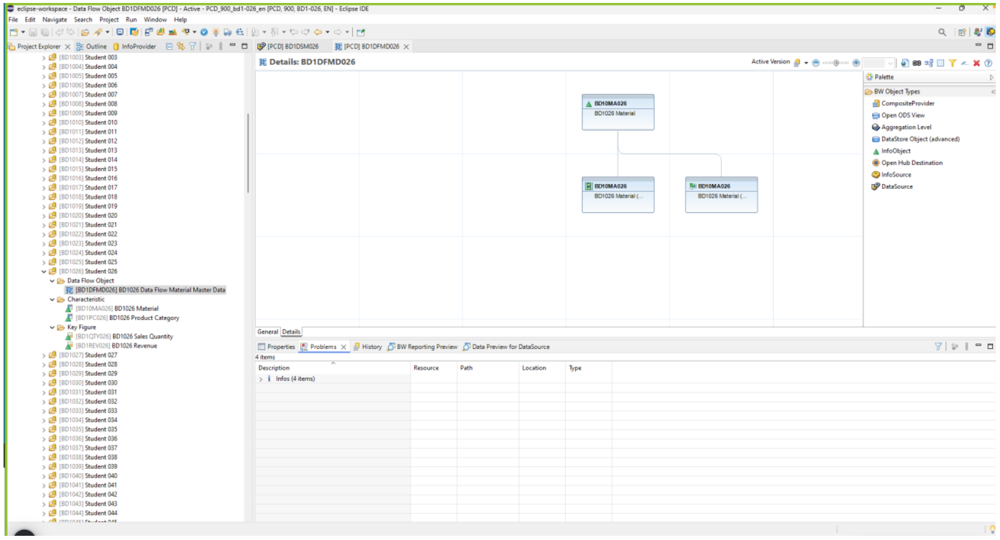
Data flow canvas in Eclipse
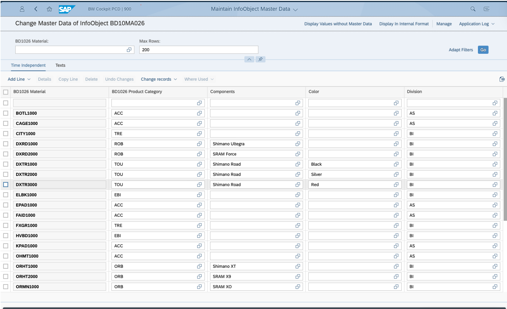
Material attributes in SAP Fiori
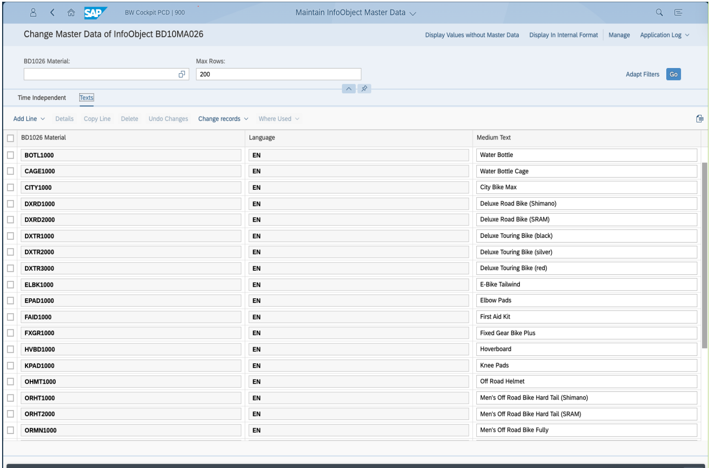
Material texts in SAP Fiori
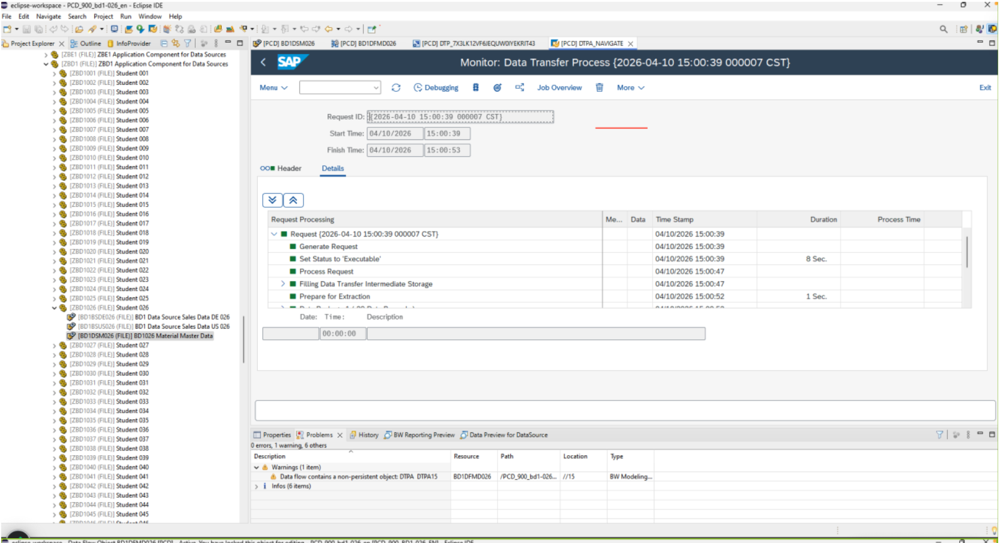
DTP monitor: 29 records loaded
Benchmark 5Complete
Enterprise data warehouse build
171,012 transactions loaded into a fully structured aDSO
Built an advanced DataStore Object across 5 dimension groups (Order, Customer, Product, Time, Measures), replacing raw fields with semantically meaningful InfoObjects. Designed complex transformation rules including a Net Sales formula and a time-dependent master data lookup for Sales Organization. Loaded 86,816 DE and 84,194 US records and activated via BW Cockpit.
aDSO designSnowflake schemaFormula rulesLookup transformsComposite Provider
Proof of work
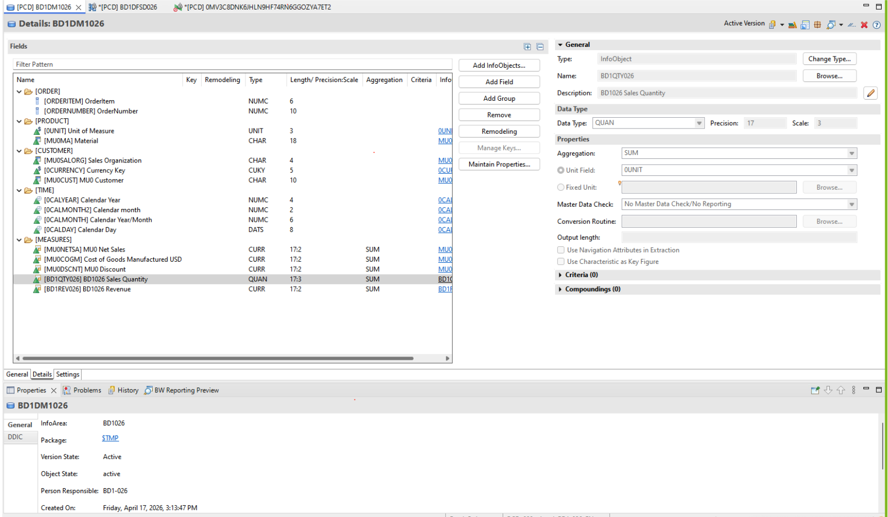
aDSO structure in Eclipse
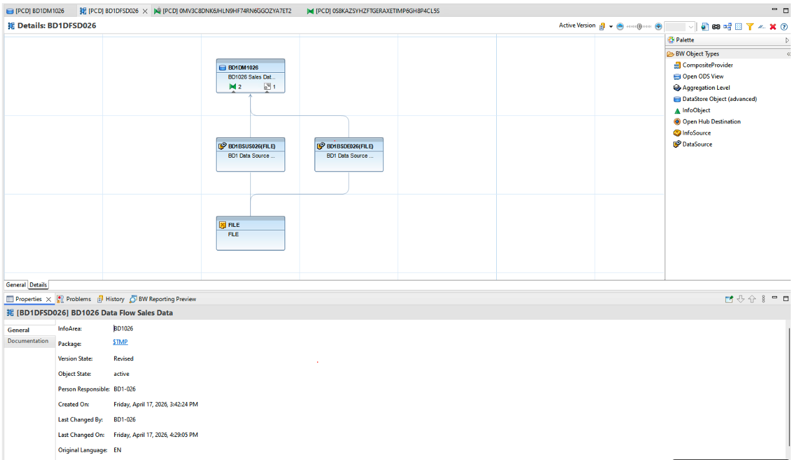
Sales data flow canvas
Benchmark 6Complete
BI reporting
CompositeProvider built and sales reports validated
Created a CompositeProvider as a virtualization layer on top of the aDSO, enabling reporting without directly querying raw storage. Activated navigation attributes for Product Category, Division, and Country. Built and executed a structured sales report validating warehouse output against known totals across product, customer, and time dimensions.
CompositeProviderBI reportingNavigation attributesData validationVirtualization layer
Proof of work
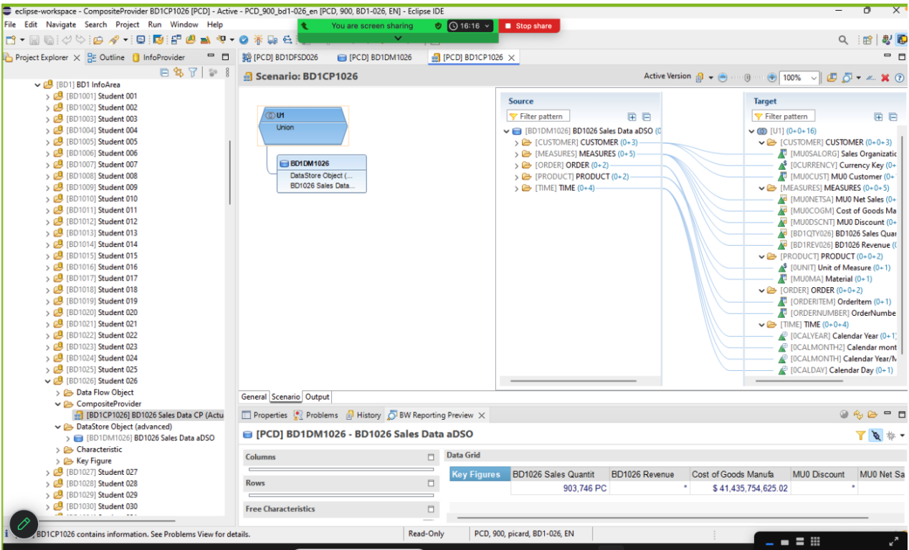
CompositeProvider in Eclipse
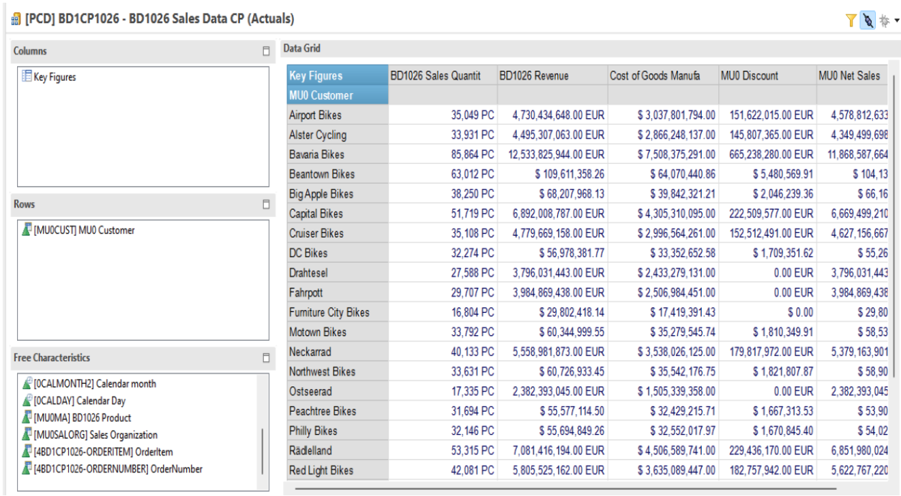
Sales report output
Benchmark 7Complete
Executive dashboard
Interactive dashboard built and exported in SAP Lumira Designer
Designed a multi-component interactive dashboard in SAP Lumira Designer connected to a BEx query on the CompositeProvider. Built a crosstab showing Revenue, Sales Quantity, Discount, and COGM alongside a column chart by Product Category. Added a dimension filter, a key figure dropdown with dynamic scripting, a reset button, and a company logo panel. Exported as BD1DB1026 for submission.
SAP Lumira DesignerDashboard designBEx queryData visualizationScript/event handling
Proof of work
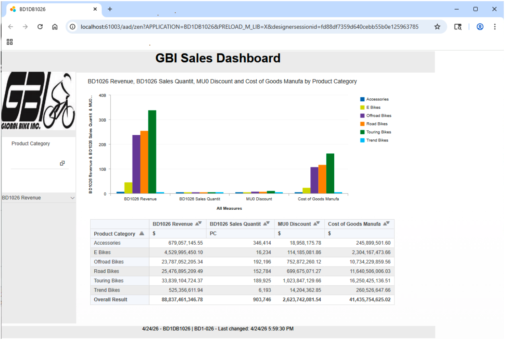
Dashboard in SAP Lumira Designer
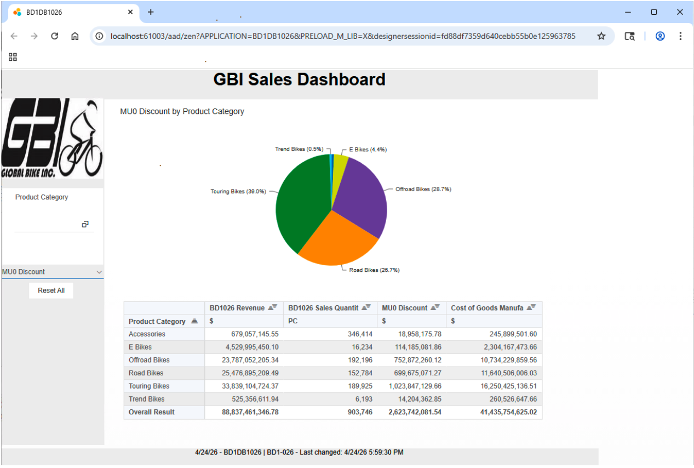
Product category revenue chart
Benchmark 8Complete
Predictive analytics
Time series forecast model built for GBI US sales revenue
Applied Triple Exponential Smoothing in SAP Predictive Analytics Expert Analytics to forecast Global Bike US sales revenue for 2012, using monthly data from 2007 to 2011. Filtered data to USD currency, configured alpha, beta, and gamma parameters, and analyzed the fitted curve against historical sales. Evaluated model performance using R-square and Goodness of Fit metrics. Published results as BD1026_BikeAnalysisModel.
SAP Predictive AnalyticsTime series analysisTriple Exponential SmoothingForecastingData mining
Proof of work
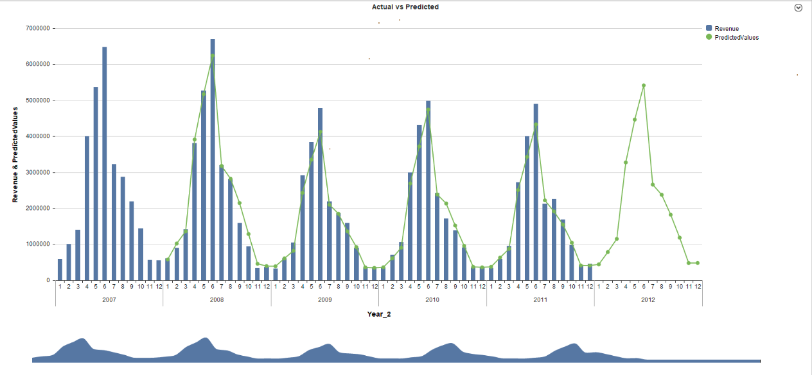
Time series of GBI sales revenue

Forecasted revenue for 2012
This is not just a class project. It is a working demonstration of how to architect, populate, and extract value from an enterprise data warehouse — from raw CSV files all the way through ETL pipelines, dimensional modeling, interactive dashboards, and predictive forecasting. The same workflow used in enterprise analytics environments worldwide.